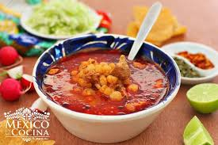

Pozole
Ingredientes
- 5 Litros de agua
- 1/2 Cebolla cortada a la mitad
- 4 Dientes de ajo
- 3 Cucharadas de sal
- 1 1/2 Kilos de maíz pozolero
- 1/2 Kilo de costilla de cerdo cortadas en trozos
- 1 Kilo de pulpa de cerdo cortada en trozos
- 5 Hojas de laurel
- 14 Chiles guajillo sin semillas y remojados en agua caliente
- 2 Chiles ancho sin semillas y remojados en agua caliente
- 2 Tazas de agua
- 2 Dientes de ajo
- 1 Cucharadita de comino
- 1 Cucharadita de pimienta negra molida
- Orégano seco
- Chile de árbol en polvo
- Cebolla picada finamente
- Lechuga romana fileteada
- Rábanos cortados en rodajas
- Limones
- Tostadas de maíz
- 1 Envase de Media Crema NESTLÉ® refrigerada (190 g)
- 100 Gramos de queso cotija rallado
Preparacion a Seguir:
1.Calienta los 5 litros agua con 1 cebolla, 4 dientes de ajo y la sal, cuando suelte el primer hervor añade el maíz y cocina por 1 hora con 20 minutos o hasta que esté tierno. Añade la costilla, la pulpa de cerdo y el laurel; cocina por 1 hora con 30 minutos o hasta que la carne esté suave. Retira el ajo, la cebolla, las hojas de laurel y la pulpa de cerdo, deshébrala y reserva.
2.Licúa los chiles con 2 tazas de agua, ¼ de cebolla, 2 dientes de ajo, el comino y la pimienta, cuela y vierte en la olla del maíz; cocina por 30 minutos más.
3.Sirve el pozole y acompaña con el orégano, el chile de árbol en polvo, la cebolla picada, la lechuga, los rábanos, el jugo de limón. Ofrece con las tostadas cubiertas con la Media Crema NESTLÉ® y el queso Cotija.